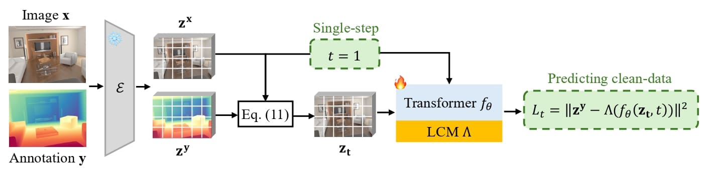
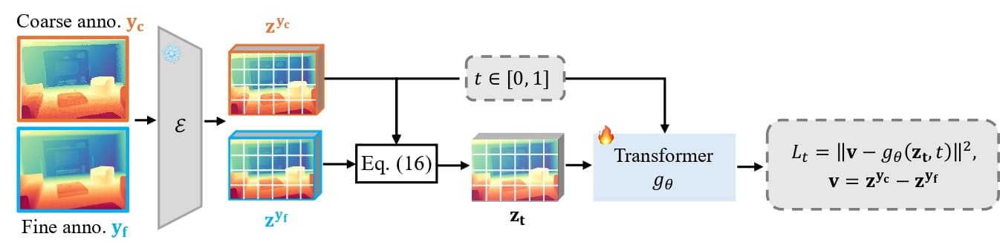

Methodology
We argue that directly inheriting the stochastic generative formulation—which is optimized for image synthesis—introduces instability and unnecessary complexity for deterministic geometric tasks. The image synthesis aims at diverse and high-fidelity generation through stochastic multi-step sampling, while the dense prediction requires a deterministic and accurate inference. This fundamental misalignment results in high structural variance and significant prediction errors for dense prediction, thereby compromising overall accuracy. To better exploit the generative world priors, we propose a decoupled, two-stage adaption protocol.
Adaptation protocol of the core predictor in Lotus-2. It adopts a single-step formulation ($t=1$) with clean-data prediction to efficiently exploit the world priors of pre-trained FLUX model, where input latent $\mathbf{z_t}$ is equivalent to the image latent $\mathbf{z^x}$, i.e, $\mathbf{z_t}=\mathbf{z_1}=\mathbf{z^x}$ according to the Eq. 11. In addition, there is a pair of Pack-Unpack operations around the diffusion Transformer $f_\theta$ inherited from FLUX, a local continuity module (LCM) $\Lambda$ is employed to mitigate grid artifacts caused by this Unpack operation.
In the first stage, a core predictor extracts globally coherent and accurate geometry through a simple yet effective adaptation of the rectified-flow formulation in FLUX. By systematically analyzing the key designs of stochastic generative formulation, including the stochasticity, multi-step sampling and parameterization type, we identify that a single-step deterministic formulation under a clean-data prediction yields much better stable and accurate results than the original stochastic multi-step residual-based design. This single-step predictor is further enhanced with a lightweight local continuity module (LCM), which mitigates grid artifacts introduced by the non-parametric Pack-Unpack operations in FLUX while maintaining architectural compatibility and efficiency.
The training pipeline of detail sharpener. Starting from a structurally correct but coarse annotation predicted by the core predictor, the detail sharpener learns the transition from coarse to fine-grained annotation via a constrained multi-step rectified-flow within the manifold defined by the core predictor.
In the second stage, an optional detail sharpener performs a detail refinement through a deterministic multi-step rectified-flow process. It operates within the constrained manifold defined by the core predictor and learns the transition from the "accurate" to "accurate and fine-grained" annotation, progressively enriching geometric details while preserving global structure and accuracy. This design bridges the gap between regression and generative modeling: the former ensures structural stability and correctness, while the latter contributes fine-grained realism. Consequently, Lotus-2 effectively leverages the generative priors in a disciplined and interpretable manner, achieving both geometric consistency and high-frequency detail fidelity without sacrificing efficiency and stability.
Inference

The inference pipeline of Lotus-2. It is a decoupled, two-stage deterministic pipeline that bridges the regression and geometric refinement. First, the core predictor produces stable and structurally consistent prediction via single-step regression. The detail sharpener then employs a constrained multi-step rectified-flow formulation to iteratively refinement without any stochastic noise. The refinement uses $T_{\text{inf}}' \leq 10$ steps, adjustable based on the desired level of sharpness. This design ensures both structural consistency and fine-grained fidelity in minimal steps.
The complete inference process proceeds as follows:
- The input image $\mathbf{x}$ is first encoded into the VAE latent space using the encoder $E$, yielding the image latent $\mathbf{z^x}$.
- The image latent $\mathbf{z^x}$ is passed through the core predictor to generate the accurate but coarse prediction $\mathbf{\hat{z}^{y_c}}$. This step guarantees global structural correctness and is performed with maximum efficiency (1 step).
- The coarse prediction $\mathbf{\hat{z}^{y_c}}$ is then fed into the detail sharpener to obtain the sharp and high-fidelity result $\mathbf{\hat{z}^{y_f}}$. This iterative refinement is achieved by the discrete Euler solver (Eq. 5). Note that this refinement is optional based on the desired level of sharpness.
- The final refined latent $\mathbf{\hat{z}^{y_f}}$ is decoded back to the pixel space using the VAE decoder $D$ to produce the final geometric prediction $\mathbf{\hat{y}}$.